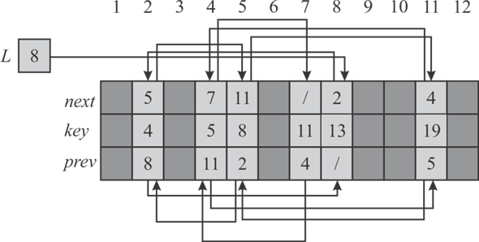
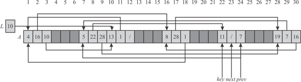
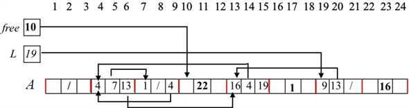
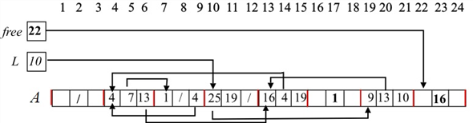
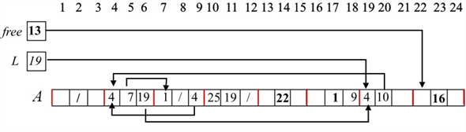

A linked list is a data structure which contains groups of node to represent a sequence. Each node in linked list stores value as well as link of the next node.
A doubly linked is also data a structure which contains groups of node but in double linked list each node store value as well as link of next and previous element.
Doubly linked list with multiple array:
A double linked list can also be implemented with the help of multiple arrays. Three arrays are used to implement double linked list. One array is used to store next node index value, one is used to store key and one is used to store previous node index value.
The following figure depicts the doubly linked list implementation with multiple arrays.

Explanation:
• The elements in the doubly linked list are.
• The first element of list is stored at index 8 in key array, the value of key[8]=13.
• First element does not have any previous element. Therefore, pre[8] =Nil.
• The second element is stored at index 2. Therefore next[8]=2.
• Similarly, all element of linked list are stored in 3 arrays. The key array stores the key value, the next and prev array store the next and previous element index of linked list.
• Arrows in above figure are used to represent the next and previous elements of any particular element.
Doubly linked list with single array:
A double linked list can also be implemented with the help of one array. In single array, 3 consecutive memory allocation are required to store the element, and its next and previous element link.
The following figure depicts the doubly linked list implementation with single arrays.

Explanation:
• The elements in the doubly linked list are.
• The first element of list is stored at index 10 in A array. The value of A[10]=13.
• In single array implementation 3 consecutive memory block of array are used to store node key, next and previous link of double linked list. The second element stored at index 1 therefore A[11]=1.
• First element does not have any previous element. Therefore, A[12] =Nil.
• Similarly, all element of linked list are stored in A[] arrays.
• Arrows in above figure are used to represent the next and previous elements of any particular element.
ALLOCATE-OBJECT () and FREE-OBJECT( x ) procedures
Consider that the homogeneous collection of objects is implemented by the single-array representation.
• When the procedure LIST-INSERT (L,x) is called, in turn it calls ALLOCATE-OBJECT().
• The procedure ALLOCATE-OBJECT returns the index x in array A, where the free space is available to allocate the object.
• Here, A[x] ( or x.A) represents an object index. A[x+0] or x.A+0 , A[x+1] or x.A+1 and A[x+2] or x.A+2 represents key, next, and prev respectively.
ALLOCATE-OBJECT ()
1. if free = = NIL
2. error " Out of Space"
3. else x = free
4. free = x.A+1 //x.A+1 = A[x+1], which represents next
5. return x
• When the procedure LIST-DELETE(x) is called, in turn, it calls the procedure FREE-OBJECT ().
• The procedure FREE-OBJECT () frees the memory at index x in array A and updates x as the immediate available free space to allocate a new object.
FREE-OBJECT(x)
1. x.A+1 = free
2. free = x
Example:

Now, the procedure ALLOCATE-OBJECT() returns 10 on calling.
On calling LIST-INSERT( L ,10) , the array is as follows:

When LIST-DELETE(L,10) is called , it calls FREE-OBJECT(10).
The result of executing the above functions the array is as follows:

A double linked list can also be implemented with the help of multiple arrays. Three arrays are used to implement double linked list. One array is used to store next node index value, one is used to store key and one is used to store previous node index value.
The nodes of doubly linked list are stored at arbitrary position so lots of elements are left as empty in this array.
A single linked list free is used to store details about the all free spaces in array. Only one link that is next is required to determine the next empty element.
Consider the ALLOCATE-OBJECT () and FREE-OBJECT () algorithm provided in section 10.3. Both these procedure are used only to maintain the free linked list that store details about the free space in array.
• The ALLOCATE-OBJECT () procedure is called after the LIST-INSERT () function. The LIST-INSERT () add new node by setting the next and previous link of new node and the existing list.
• The LIST-INSERT () take first element from pool of free space and insert new node in it.
• After that, call ALLOCATE-OBJECT () procedure to update the pointer of free linked list to point to next free space in array.
• Similarly, FREE-OBJECT () procedure is called after the LIST-DELETE () function.
• The LIST- DELETE () delete a node by setting the next and previous link of a deleted node.
• FREE-OBJECT () procedure is used to add new free space in free linked list.
The procedures ALLOCATE-OBJECT and FREE-OBJECT can be implemented if a track of the next available spot is kept in the array.
This spot is greater than the number of elements being stored.
For FREE-OBJECT, when a space is freed, decrement the position of each element at a position and update the pointers
The above process takes linear time. The algorithm to free the object at one location 1 through m is as follows:
FREE-OBJECT(i)
A[i+1] =free
free=i
The m index locations indicate the number of elements in the list. The array entry A[m+1] is used to allocate a new object. When a location is freed, take the object at the location m and move it there, freeing m.
Procedure COMPACTIFY-LIST to maintain the lists of occupied and free objects
Consider a doubly link list L that is being stored by the means of the arrays. The procedures ALLOCATE-OBJECT and FREE-OBJECT are used to manage the concerned arrays of allocated and the freed objects. These procedures are already defined in the section 10.3 of the book.
Now the routine for managing the list of objects and the list of free objects F has to be defined:
Now the procedure for putting the n items in the list
L and m–n elements in the list F would be
defined. The algorithm should be defined in such a manner so that
the total run time of the algorithm is . Doing this
in a straight forward manner would end up in creation of an
algorithm that has runtime.
. Doing this
in a straight forward manner would end up in creation of an
algorithm that has runtime.
.The procedure is as below:
The procedure COMPACTIFY-LIST manages the list L with
n elements so that the elements are stored from the index 1
to .
It also manages the elements m–n in the list F
so that the items can be stored from the index n+1 to
m.
.
It also manages the elements m–n in the list F
so that the items can be stored from the index n+1 to
m.
COMPACTIFY-LIST(L, F)
1. //save the quotient that is gotten by dividing m and n in a variable
2. //allocate nobjects in the given list
for
// invoke the routine to allocate the objects in the given list
3. ALLOCATE-OBJECT()
4. //define new variable
5. //loop to find out if there areitems to becopied
while
6. //loop to copy n items to the list of free objects
for
7. //check if entire set of items has been copied
if
return
8. //call the procedure to copy the elements to the F list
FREE-OBJECT(x)
9. // update the variables
10. return
Time Complexity of the algorithm:
Now calculate the total execution time of the algorithm as below.
There runs an initial “for” loop running n times for allocating the objects to the list L. After this, there is over a “while” loop running p times and an inner “for” loop running at most n times.
So, using the master’s theorem, the time necessary for execution of algorithm should be:

Now, p is the quotient gotten by dividing n with m. In the practical examples p is almost negligible in comparison to the other factors that count in calculating the time required for executing the algorithm
So p can be left alone in the above yield of calculation.
So, the total time required toexecute the algorithmwould be:
Space complexity:
The algorithm used above uses only 4 additional variables to keep track of the details. In all the iterations of the loop the existing value held by the related variable is being overwritten, so the space is not increasing gradually or with the size of the input.
This makes the additional space used by the procedure constant as well as the entire space.
So, the algorithm would require constant space.
The procedure ensures that values are kept properly in the arrays L and F. This is done by maintaining a pointery for the second list. This variable is used to copy n items to the list everytime till there are still items to be copied. The reason to do this is the management of complexity of the algorithm.